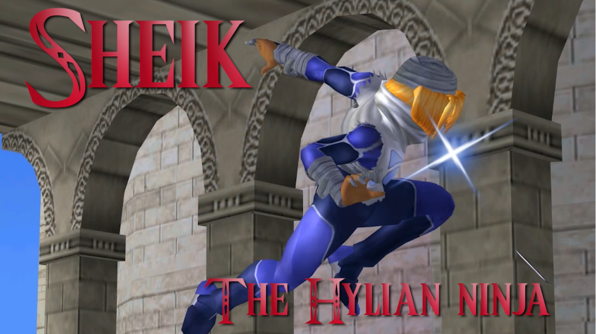

Sheik, est un personnage de la série Legend of Zelda. Il s'agit en fait de la princesse Zelda déguisé. Sheik etait originalement considéré comme le meilleur personnage du jeu au début de son existence, apres des années de competition, malgré sont regne terminé, Sheik reste un personnage tres dangereux et peut rivaliser avec les meilleurs d'entre eux.

reconnu pour son agilité et ses attaques rapides, Sheik, malgré son apparence, excelle avec un plan plus défensif et basé sur le tech-chasing (technique qui permet de chasser l'adversaire en réagir a leur décisions). elle peut utilisé son agilité d'une maniere similaire a Captain Falcon pour éviter des attaques et pour continier des combos. malgré ne pas avoir gagner de grand tournoi dans les années récentes, sheik reste un danger constant en tournoi.